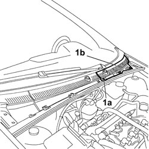
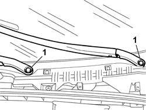
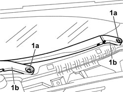

5050B32 WINDSCREEN WIPER ARM/S - R+R
- Path
- Procedures > 50 AUXILIARY UNITS > 5050 SCREEN WASHERS AND HEADLAMP WASH/WIPE > 5050B WINDSCREEN WASH/WIPE > 5050B32 WINDSCREEN WIPER ARM/S - R+R
- Kind
- repair procedure (removal / refitting; the operation number is the code)
- Applies to
- all engines; all production periods
- Interactive page
- https://sloeber94.github.io/elrnDB-fCrm/en/#/194000650
Applies to: all engines; all production periods
 Removing
Removing
 Refitting
RefittingOp. 5050B28 WINDSCREEN WIPER BLADE/S - R+R
- Open the bonnet.
1. Using the special tool, release the fixing buttons (1a) and remove the windscreen base trim right cover (1b).
Tool | Description | Function | Validity |
|---|---|---|---|
1878077000 | Knife | Retainer removal |

Applies to: all engines; all production periods
1. Release the protective cap for the nut fixing the wiper arm.

Applies to: all engines; all production periods
1. Undo the fixing nut (1a) and release the wiper arm (1b) from the operating pin.
- Remove the wiper arm from the vehicle.

Applies to: all engines; all production periods
Refitting
Removing- Check that the windscreen wiper arm is not damaged.
- Position the wiper arm correctly on the operating pin.
- Screw in the nut fixing the wiper arm and tighten it to torque.
Component | Fastening | dia | Value (daNm) | Validity |
|---|---|---|---|---|
WINDSCREEN WIPER ASSEMBLY ON BRACKET | Bolt | M6 | 0,8 ÷ 1,2 |
- Fit the protective cap for the nut fixing the wiper arm.
- Position the left cover and secure it to the windscreen base trim.
- Close the bonnet.
Op. 5050B28 WINDSCREEN WIPER BLADE/S - R+R
- Check that the windscreen wiper arm(s) is (are) working.